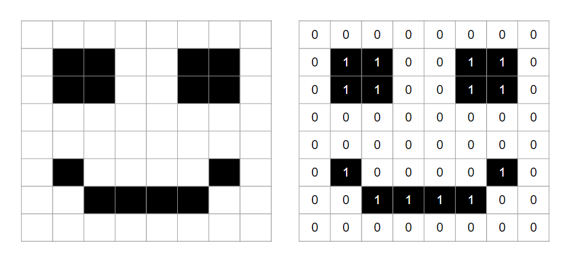
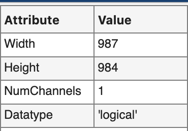

Grayscale Images
You know, like pictures and stuff, but with no color.
Overview
NEWS FLASH: Images are just matrices. As such, images have elements with coordinates (rows and columns) and numeric values. The coordinates of the elements represent a location in the image, while the numeric value represents intensity (or luminance)how bright that pixel should be. In the following example, we have two luminance values: black and white. These luminance values are stored as 1's and 0's.

Since images are just numeric matrices, we can easily leverage the full power of MATLAB for image processing.
In this module, we will explore the properties of intensity (or grayscale) images, which are images that contain only one pixel value per image location and typically represent shades of gray or just one color.
Things You Should Know
By the end of this module, you should be able to:
-
open an image in MATLAB
-
manipulate the basic properties of an image
-
typecast an array so that it can be properly displayed in MATLAB
-
normalize an image to improve contrast
-
Define all of the [Key Terminology]
-
use all of the listed [Key Functions]
-
Change the colormap of a grayscale image
Relevant MATLAB Documentation
Key Functions
-
mat2gray- converts a numeric matrix to a grayscale image array by normalizing the pixel intensity values to range from 0 to 1. Always returns a class double. -
colormap- sets current color map (look-up table) -
double- typecasts an array to a double class -
uint8- typecasts an array to an unsigned 8-bit integer class -
uint16- typecasts an array to an unsigned 16-bit integer class
Image Processing Toolbox Functions
Notice that these functions start with the prefix "im":
-
imageViewer- image viewer app -
imread- reads in image files and returns a matrix -
imshow- displays images in a figure -
imshowpair- overlays images or displays side by side to compare differences -
im2double- converts an image to double precision ranging from 0 to 1 (but without normalizing the values first)
Key Terminology you should know
-
Pixel: Picture element: the smallest addressable element in a rasterized, bitmapped digital image. Considered to be a point sample of an image. Has x- and y- coordinates and a discretized value to indicate intensity or color.
-
Bit depth: the number bits used to indicate the color of a single pixel in a bitmapped image
-
Dimensions: The height and width (in pixel count) of an image
-
Colormap / Look-up table (LUT): A table or array that maps pixel values to color intensities. For example 0 = black, and 255 = white
-
Metadata: included information about an image, such as its dimension, bit depth, acquisition parameters, etc.
Reading images
You can programmatically read images into MATLAB using the function imread, which takes a file path (or URL) as an input and returns a numeric array.
For this example, we will read one of MATLAB's built-in images (moon.tif):
| Read in Image | |
|---|---|
Since MATLAB already knows about the "moon.tif" image and it's location, we just have to enter the file name.
WARNING: Do not forget the semi-colon at the end of the imread command to suppress output or you will see a lot of numbers populate the command window.
After the imread function call, examine the img variable's properties in the workspace:
img is a numeric variablean unsigned, 8-bit variable.
So, how is this an image? Read on to find out...
Images are Matrices
Once loaded, image variables work like any other numeric matrices. For example, you can get the number of rows and columns of an image variable using the function size, as follows:
| Get Dimensions | |
|---|---|
So we have a numeric matrix with 537 rows and 358 columns. In image terms, the width is 358 pixels and the height is 537 pixels.
You can perform math on an image matrix, just like you can with any other numeric variable. Here we calculate the maximum intensity value of the image using the function max:
| Max of img | |
|---|---|
A maximum of 255 matches the maximum potential vale of an unsigned 8-bit variable. Here we indexed img using (:). This syntax ensures that you get just one value returned from max, instead of getting a maximum value from each column in the matrix.
Challenge: Images are matrices
Question: What do you predict the minimum pixel intensity of the image to be? Use the function min to test your prediction.
Since this image is an unsigned 8-bit variable uint8, the minimum possible value is 0. You can see this in the workspace as well.
Image Properties
Every image stores data in a hidden header field known as the image's metadata. The metadata describes the properties of the image, such as its dimensions, bit depth, acquisition parameters, etc.
The function imfinfo reads this metadata and returns a structure:
| Get metadata | |
|---|---|
img_meta =
struct with fields:
Filename: '/Applications/MATLAB_R2018a.app/toolbox/images/imdata/moon.tif'
FileModDate: '13-Apr-2015 13:23:13'
FileSize: 184388
Format: 'tif'
FormatVersion: []
Width: 358
Height: 537
BitDepth: 8
ColorType: 'grayscale'
As you can see, img_meta, is a MATLAB structure with multiple fields such as, 'Filename','FileSize', 'BitDepth', 'Width', 'Height', etc. And yep, it's an 8-bit image.
Width and Height corresponds to the number of columns and rows, respectively, in the img variable.
Displaying images
Built-in Image Viewer
imageViewer is the basic image viewer app that is included in the MATLAB Image Processing toolbox. (1)
- imageViewer is only recently developed app in MATLAB. The previous image viewer tool was called
imtool. This tool has similar functionality to imageViewer but looks and operates a little differently. Refer to the MATLAB documentation for more information
You can launch imageViewer from the Apps tab. Click on the Image Viewer icon:
Or, you can run imageViewer from the command window. Simply type:
| Launch imageViewer | |
|---|---|
In either case, MATLAB will return a window that looks like this:

To open images, you can click on the "Import Image" icon.
Or, you can call imageViewer from the command window and input a image file path:
Or, since we have have already loaded the moon image into the workspace as variable img, we can input the variable name, as follows:
Either way, you should see the following image in imageViewer:
Notice that the window now has three tabs: "Viewer", "Contrast", and "Colormap".
The bottom left-hand corner of the image viewer displays a live update of pixel information:
This information is relevant to the current pixel being pointed at by the mouse pointer. As you move the pointer around the image to point at different pixels, this info will update the X,Y coordinates and the intensity value of the pixel currently being pointed at.
The bottom right corner displays the dimensions of the image:
- Height = number of rows
- Width = number of columns
imageViewer Tools
The imageViewer app has a variety of built-in tools that you can use to explore and modify the properties of the displayed image.
You can review the functionality of the viewer here.
Take a moment to familiarize yourself with the imageViewer tools and explore their operations.
Useful imtool Syntax
Before we move on, let's tidy up a bit. If you have opened many imageViewer windows, you can close them all with the following syntax:
| Close All imageViewer Windows | |
|---|---|
Image Display Function (imshow)
Often you don't always need all of the bells and whistles of the imageViewer app. When you simply want to display your image, you can use the function imshow.
| Display Image | |
|---|---|
Notice that the image is displayed in a normal figure window (like a plot).
Displaying multiple images or plots (in one figure)
imshow becomes really useful when you want to display more than one image in a single figureor an image and a plot.
First, let's open another image. I have stored another picture on the internets for our enjoyment. As you can see in the syntax below, imread accept URLs as file locators, so this code will download the image from my cloud drive:
| Import moon2 from the internets | |
|---|---|
Now we have two image variables in the workspace: img and moon2. To display them side by side, we simply combine the use of tiledlayout, nexttile, and imshow as follows:
| Tile Images | |
|---|---|
Here the use of tiledlayout with the paired inputs of ('TileSpacing', "none", 'Padding', "compact") allowed us to minimize the spacing around the two images.
Interactive Display Tools (impixelinfo)
If you need a little more functionality than what is provided by imshow, you can add your own display tools (similar to the ones found in imageViewer) using the interactive tools included in the Image Processing toolbox.
For example, in the code block above, we used the function impixelinfo to add a pixel browser to the bottom left corner of the figure window so you can browse the pixel information of the image just like you could in imageViewer:
Cropping Images
Cropping is just like indexing a matrix. You can index an image variable just like any numeric variable because an image variable is a numeric variable.
For this example, we will crop the image of the dark side of the moon, moon2. Display the image using the imtool app
You should now see the following picture of the moon in MATLAB:

If you inspect the image metadata you will see that this image has different dimensions from the previous image.
Its width and height are 987 and 984, respectively.
Selecting x,y coordinates
In imageViewer, move the pointer around the image to orient yourself to the rows and columns of the image.
Pixel coordinates vs ROW, COL indices
In the MATLAB image tools, like imageViewer, pixel coordinates are listed by their X,Y coordinates, not their ROW, COL indices. In XY coordinates, X corresponds to the column index and Y corresponds to the row index. This means that first number listed inside the parenthesis indicates the column index while the second number indicates the row index the reverse of MATLAB indexing. Also notice that the XY coordinate of 0,0 refers the the top left corner of the image, instead of the bottom left corner of most plots.
To convert to row, column indices, make sure that you use the X values as your columns indices and your Y values as your row indices. For example, the off-center crater in the moon image has the following row, column indices:

Similarly, you can slice out a column of image data and display using the syntax to index "all" rows, as follows:
Crop Function
To simplify cropping, the MATLAB Imaging Toolbox includes a crop tool. The function is called imcrop. There is also a crop button in the imageViewer toolbar that does the same thing.
Here is the syntax to call the crop tool:
| Crop Tool | |
|---|---|
After you execute the above commands, a window will appear displaying the image moon2. Your mouse pointer will turn into cross-hairs. Drag the cross-hairs over the image to capture the part of the image you would like to crop. Then double-click inside the box you created.
After double-clicking, a new variable will appear in the workspace called moon2_crop. This is the cropped version of moon2. Notice that crater variable has smaller dimensions than moon2.
Common Image Classes
Images are imported into MATLAB as numeric variables. To properly display images, you need a good understanding of the range of pixels found in the image (the bit depth) and the range of values possible in the numeric class. Remember, integer classes, like uint8 have a maximum value of 255. This can a little confusing when the bit depth of the image does not match the bit depth of the numeric class.
Integer Class
Grayscale images are often stored as unsigned integers to save hard disk space. This means that the pixel values in these images are stored as integers and they have a set maximum value (like 255 or 4095).
The following table lists the typical integer classes used for images of different bit depths.
| MATLAB Class | bit depth | Pixel Range | Class Range |
|---|---|---|---|
| uint8 | 8-bit | 0-255 | 0-255 |
| uint16 | 12-bit | 0-4095 | 0-65,535 |
| uint16 | 16-bit | 0-65,535 | 0-65,535 |
For example, take the moon2 variable that we created using imread. As you can see in the workspace, the class of moon2 is uint8, which likely means that it is an 8-bit image (and has a pixel range of 0-255).
Also, if you hover over the image in imageViewer you will notice that the pixel intensity varies between 0 and 255.
!!! note "A word on Bit Depth and Numeric Classes
In the table above, notice that we use the same numeric class, **`uint16`**, for both 12-bit and 16-bit images. While images may be captured at bit depths such as 12-bit, numeric variables can never be 12-bit due to the way computer memory is chunked into bytes (8 bits). So, you can only have a variable that is 8-bit or 16-bit and nothing in between. This can cause display issues in MATLAB (and other image processing applications) if you don't adjust the image dynamic range to match to the numeric variable's dynamic. More on this later.
Logical Class
The most basic raster image is a binary image, which is comprised of all ones or zeros pixels, (or , trues or falses). The MATLAB class used for binary images is logical. We can easily create a binary image by typecasting (1) into a logical class.
1.Typecasting coverts a variable from one data type to another. Typecasting is critical for the proper display of scientific images due to the way that these images are stored and (sometimes) improperly imported. moon2.
Notice that the binary image only contains
trueorfalse. Also notice that the image is listed as a 'logical' DataType in theimageViewermetadata panel.

Floating-Point Class
MATLAB images can also be stored in floating point classes, such as double or single. This is especially useful for performing mathematical operations on images or for adjusting the dynamic range of an image to match the dynamic range of the numeric class.
If you convert an image to a floating-point class, then all the pixel values in that image must range from 0 to 1 to be displayed properly in MATLAB.
| MATLAB Class | Pixel Intensity Range | Class Range |
|---|---|---|
| single | 0 - 1 | 0-2^24 |
| double | 0 - 1 | 0-2^53 |
You can use the MATLAB function double to typecast moon2 to a floating point class as follows:
| Typecast to Double | |
|---|---|
And the variable moon2_dbl is listed as a "double" class in the workspace.
But when we try to display moon2_dbl using imageViewer:
We are confronted with the following range warning

This warning is telling us that the range of in the moon2_dbl variable (0-255) do not match the expected range, which should be from 0-1.
If we go ahead and click "OK", then we see the following:
Hmm, the image looks like a binary image, but is listed as an "intensity" or grayscale image in Image Information window:
Also, notice that if you move the cursor around the image, you can see that the original pixel values are maintained in the image as reported in the Pixel Info display at the bottom of the window
So, the image still has a range of pixel intensities (and thus contrast), but MATLAB does not display it properly. What gives? Well, as MATLAB warned when we opened the window, a variable with a numeric class of "double" should have a range of values that fall between 0 and 1. ANY pixel values above 1 are displayed as the maximum intensity (or in this case, white).
To properly covert moon2 to a double, you can use the MATLAB function im2double (which is included with the Image Processing toolbox).

and now we see the moon in its all its glory, properly displayed in 256 shades of gray. We also have the restoration of the Contrast tab at the top of the window. Notice that the pixel values in the Pixel Info display are now displayed as fractions that all fall between 0.00 and 1.00.
Saving Images
Saving an image to your hard drive is fairly straightforward: use the functions imwrite and uiputfile.
The following code prompts you to save the image of the moon to your computer. Choose a folder (such as the MATLAB folder) when prompted to save the image.
[file_name, folder_name] = uiputfile('moon2.tif')
image_path = fullfile(folder_name,file_name)
imwrite(moon2, image_path)
Notice that uiputfile allows you to create a file name and location for the file. Otherwise the syntax is very similar to reading files.
END
Congratulations, you've made it to the end. Way to hang in there.